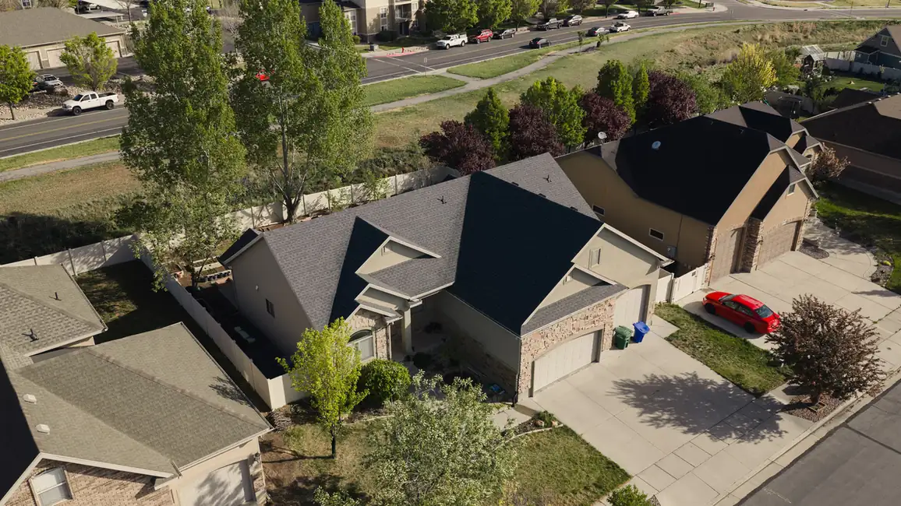
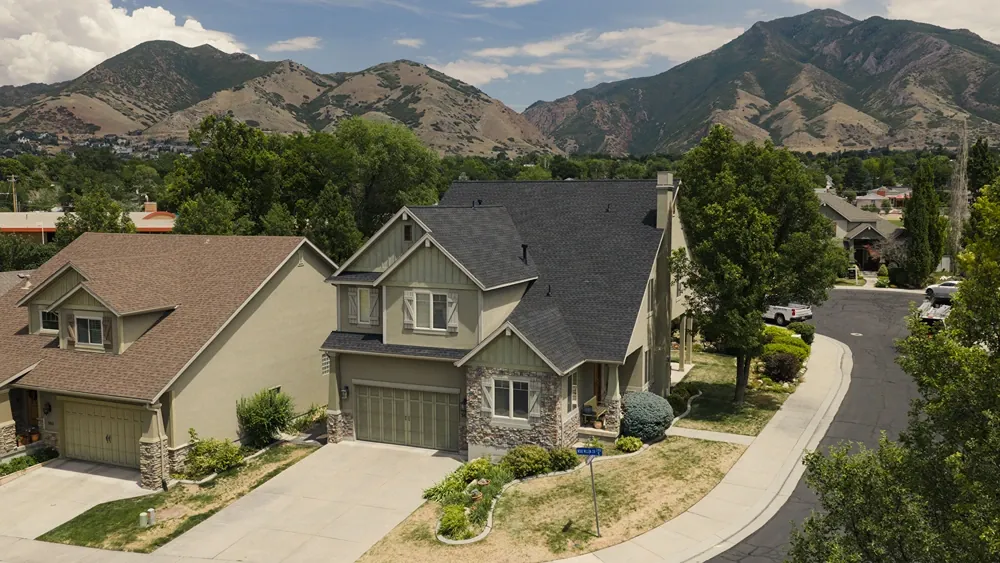
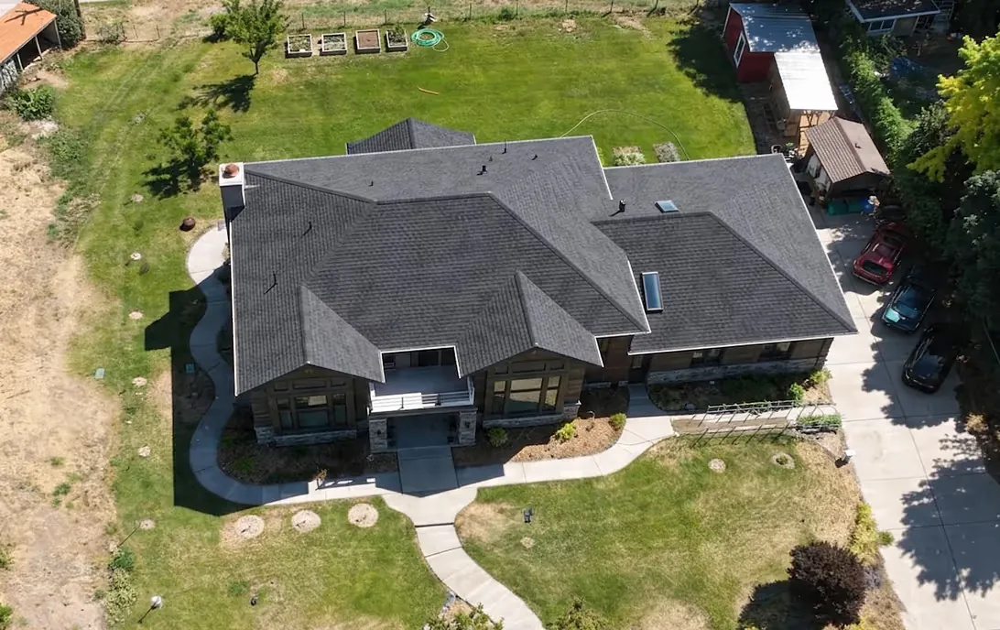
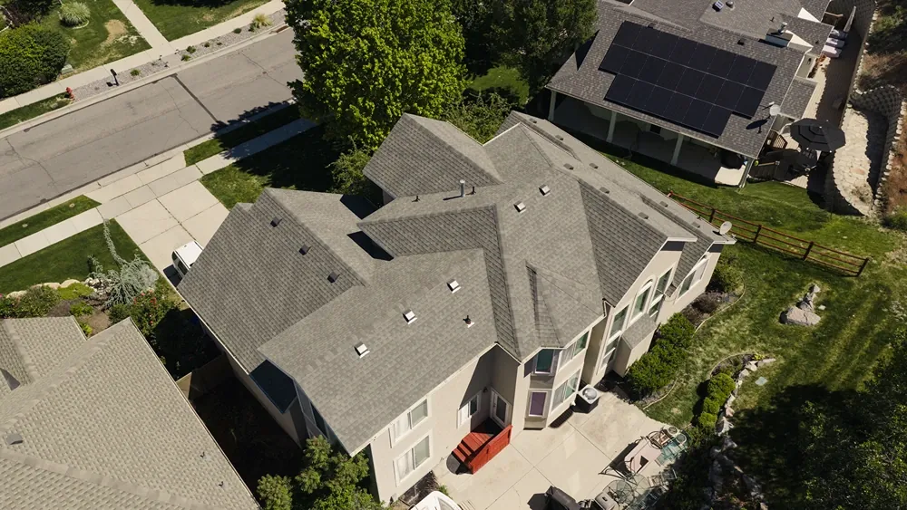
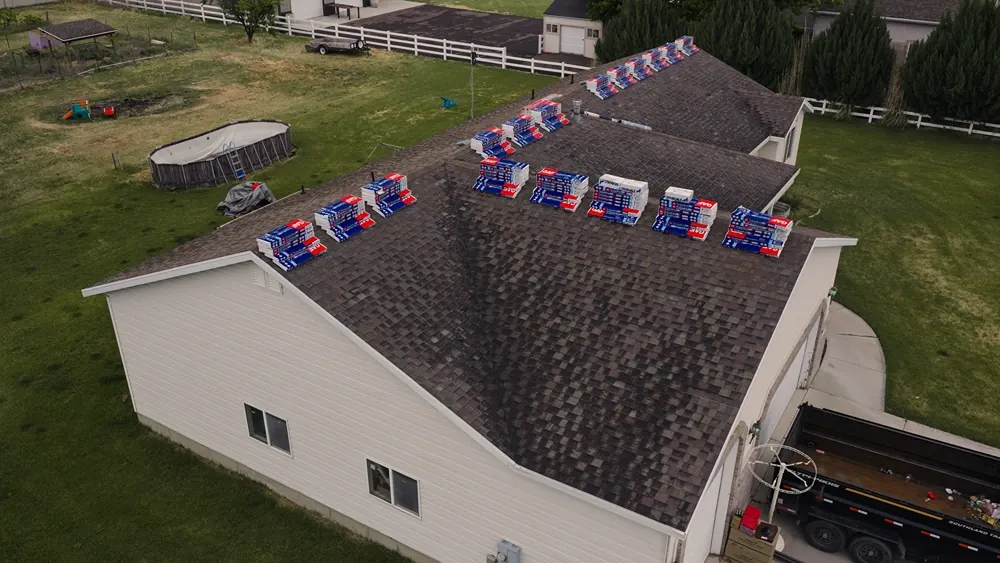
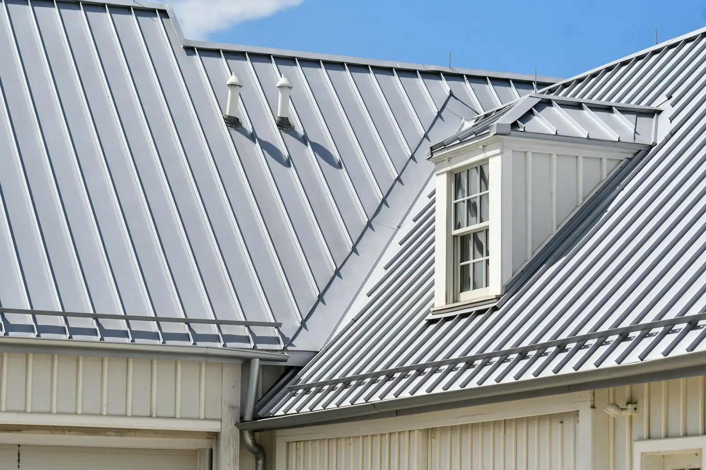
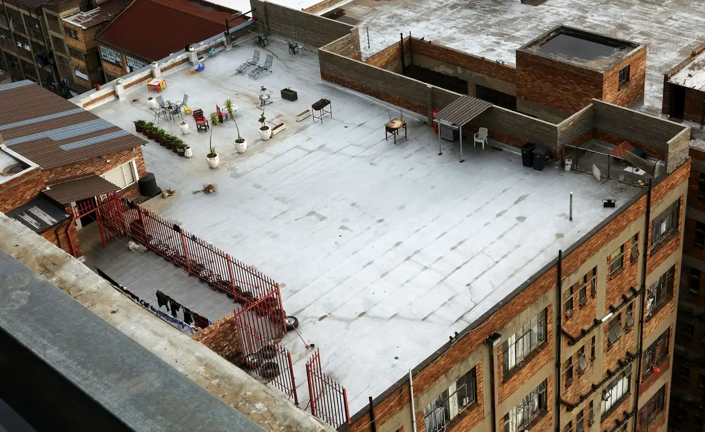
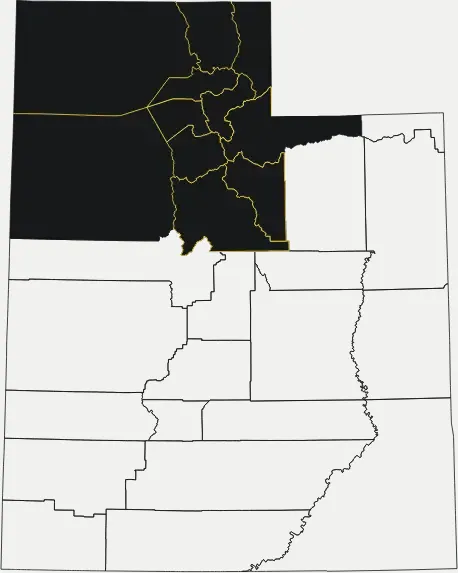

South Jordan, UT · GAF Master Elite® contractor
South Jordan’s roofing company. New roof in a day.
Aesthetic Roofing is a GAF Master Elite® roofing company in South Jordan, Utah, replacing and repairing roofs for homeowners across Northern Utah. Honest recommendations, premium materials, and most replacements finished in a single day.

Once you approve your proposal, we begin within 14 calendar days (weather permitting), or we credit 20% of your project cost back to you.
The 14-day promise
Approve your proposal. We start within 14 days.
- Day01
- Day02
- Day03
- Day04
- Day05
- Day06
- Day07
- Day08
- Day09
- Day10
- Day11
- Day12
- Day13
- Day14
- Or20%back
Roofers in South Jordan
A Northern Utah roofing company you can trust
Your roof protects everything underneath it, which is why choosing the right roofing company matters. We help homeowners in South Jordan and across Northern Utah make confident decisions with honest recommendations, premium materials, and quality workmanship.
As a GAF Master Elite® roofing contractor, we meet some of the industry’s highest standards for training, installation quality and customer service. Whether you need a minor repair or a complete roof replacement, our team focuses on doing the job right while keeping the whole process straightforward.
If your roof can be repaired, we’ll tell you. If replacement makes more sense, we’ll explain why.
Meet the team

Roofing services
Roofing services for every home
Every home has different roofing needs. Pick the one you’ve got.

01Roof Replacement
When repairs are no longer cost-effective, a full replacement gives you a durable, attractive roof, usually finished in a single day.
Learn more 02
02Roof Repair
Leaks, missing shingles, damaged flashing and other problems, fixed before they turn into bigger ones.
Learn more
03Storm Damage
Wind and hail damage repaired fast, with an optional insurance concierge to document your claim.
Learn more 04
04Roof Health Report
A certified inspector examines your roof and gives you a clear summary of findings and your options. Free across our service area.
Learn more
Engineered roofing systems
A roof is more than the shingles you can see.
We install full roofing systems: shingles, underlayment, ice and water protection, flashing and ventilation, working together. Our crews follow GAF manufacturer specifications on every job.
Compare roof typesStructured execution
What to expect when you work with us
A clear, step-by-step process, and a named person responsible at every stage.
- Free Roof Health Report
A certified inspector examines your roof and walks you through what they found.
- A proposal with three priced options
Fixed price and schedule, plus financing choices if you want them.
- Installation, usually in one day
Your install coordinator manages materials and crews; your project manager is on site.
- Final inspection and walkthrough
We check the work against GAF specifications and leave the site clean.
Roof types
Roofing materials we install
Choosing the right material is just as important as choosing the right roofer. We’ll help you compare durability, looks, upkeep and budget.

Asphalt ShingleThe most popular choice in Northern Utah: performance, value and curb appeal.
Standing Seam MetalA clean, modern look with decades of protection and little upkeep.
Flat RoofingLow-slope systems installed with the specialized techniques they need. Designer AsphaltArchitectural shingles that add dimension and character.Reviews
What homeowners say
Our work
Recent projects


Service area
Roofing across Northern Utah
Based in South Jordan, we work in 11 Northern Utah counties and in major cities including South Jordan, Salt Lake City, Ogden, Orem and Tooele.
See service areas
11 countiesFAQ
Clear answers about our process
From the blogWhat causes roof leaks?The usual suspects on Utah homes, how to spot them from inside, and when a handyman patch is enough.What areas do you serve?
What services do you offer?
What warranties do you offer?
How much does it cost to replace a roof?
Do you offer free roof inspections in Utah?
Do you assist with insurance claims?
Do you offer financing?
How quickly can you replace my roof?
Free Roof Health Report
Find out what your roof really needs.
Book a free Roof Health Report. You get a clear summary of what we find and three priced options, with no pressure.